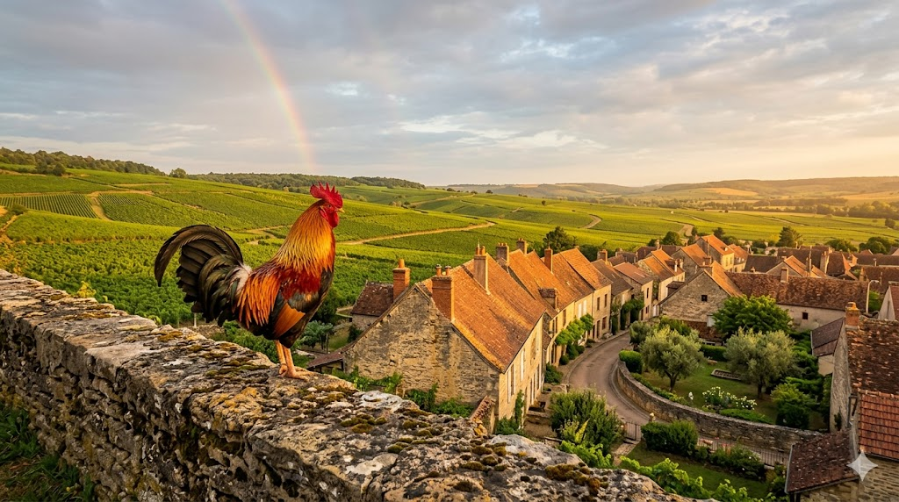

התרנגול הגאלי
Le Coq Gaulois • France
א. אטימולוגיה (חקר השם המלא)
הפרדוקס הלטיני: Gallus vs Gallia
הזהות הלאומית של צרפת עם התרנגול אינה מקרית, אלא פרי של משחק מילים לטיני עתיק שהחל כהתגרות פוליטית. המילה הלטינית "Gallus" מייצגת שני עולמות תוכן מקבילים:
Gallus - כינוי לתושב חבל הארץ "גאליה" (Gallia). הרומאים השתמשו בשם זה לתיאור השבטים הקלטיים הפראיים שישבו בצרפת של היום.
Gallus - המילה הלטינית לציפור התרנגול (Rooster). השם נגזר מהיכולת של העוף להשמיע קול קריאה רם המכריז על בוא השחר.
הרומאים נהגו ללעוג לגאלים באומרם כי הם כשמם - תרנגולים רעשנים ונוטים לקרב. הצרפתים, בצעד של גאווה לאומית, אימצו את ההשוואה והפכו את התרנגול לסמל של עירנות רוחנית ואומץ רפובליקני בלתי מתפשר.
השורש האבולוציוני: Gallus
מקור: הודו-אירופי קדום (*gal-)
השם המדעי אינו לטיני בלבד; הוא נשען על שורש קדום שמשמעותו "לקרוא בקול" או "לשיר". הוא חולק שורש עם המילה Call באנגלית ועם מילים המציינות שירה בשפות סלאביות עתיקות.
מעמד הבית: Domesticus
מקור: לטינית (Domus)
מציין את הסיווג הטקסונומי הסופי של המין כחיה שעברה תהליך ביות מלא (Domestication). פירושו: "השייך למשק הבית", בניגוד למיני הבר שחיו ביערות הג'ונגל.
ניתוח זואולוגי: רבייה ותפוצה
יא כמות ביצים בכל הטלה
התרנגולת הגאלית, בגרסת המורשת שלה (Heritage Breeds), מטילה מחזור של 10 עד 12 ביצים בכל הטלה (Clutch). בטבע, מספר זה נועד להבטיח את שרידות המין מול אחוזי טריפה גבוהים של אפרוחים צעירים.
יב תקופת הדגירה המדויקת
תהליך הדגירה אורך 21 ימים בדיוק. מדובר באחד התהליכים המדויקים ביותר בעולם העופות, הדורש טמפרטורה קבועה של כ-37.5 מעלות צלזיוס אותה מספקת הנקבה בגופה לאורך כל התקופה.
יג תפוצה גאוגרפית עולמית
בעוד שסמל התרנגול הגאלי מרוכז בצרפת, התפוצה הביולוגית של המין היא קוסמופוליטית (כלל עולמית). עקב הביות המוצלח, הוא נמצא בכל יבשת מאוישת על פני כדור הארץ, ומהווה את הציפור הנפוצה ביותר בעולם.
יד מבנה חברתי: מונוגמיה
התרנגול הוא מין פוליגמי (Polygynous) מובהק. המבנה החברתי מבוסס על "זכר אלפא" יחיד השולט על להקה של נקבות רבות (Harem). אין קשר זוגי קבוע, והזכר אינו שותף לתהליך הדגירה או גידול האפרוחים.
ב. שנות חיים
בסביבה חופשית ומוגנת, תרנגול גאלי חי בממוצע בין 5 ל-10 שנים. בחוות מורשת מיוחדות בצרפת תועדו פרטים שהגיעו לגיל 14 שנה בזכות תזונה מבוקרת והיעדר לחץ טורפים.
ג. גודל ומשקל
משקל הזכר: 3.5 - 5.0 ק"ג.
משקל הנקבה: 2.5 - 3.5 ק"ג.
גובה עמידה: 65 - 75 ס"מ.
ד. סיבת הבחירה ההיסטורית (צרפת)
התרנגול נבחר לסמל את צרפת משום שהוא מייצג את החוסן העממי. בזמן שהמלכים והקיסרים (כמו נפוליאון) בחרו בעיטים ובנשרים כסמלי אצולה אימפריאליים, התרנגול היה תמיד הציפור של האיכר הפשוט. הוא מסמל את הערנות (Vigilance) – היכולת להבחין ראשון באור השחר המבשר על סיום החשיכה. כיום הוא מופיע בגאווה על מדי נבחרות הספורט הלאומיות ("Les Bleus").
ה. הבדלים בין זכר ונקבה
דימורפיזם זוויגי קיצוני: הזכר גדול פיזית, מתהדר בכרבולת אדומה (Comb) ודלדלים (Wattles). נוצות זנבו ארוכות, קשתיות ובעלות ברק מטאלי. הנקבה צנועה וקטנה יותר, ונוצותיה משמשות להסוואה בקינון.
ו. שם בנגלה של הציפור
מורוג (Morog - মোরগ)
מקור השם בשפה הבנגלית המקשר בין קריאת הבוקר לשחר.
י. מצב השימור
ללא חשש (Least Concern - LC)
כעוף הנפוץ בתבל (מעל 25 מיליארד פרטים), אין סכנה לקיומו. עם זאת, בצרפת קיימות תוכניות ממשלתיות להגנה על "זני מורשת" (Heritage Breeds) כדי לשמר את המגוון הגנטי המקורי של הסמל הלאומי.